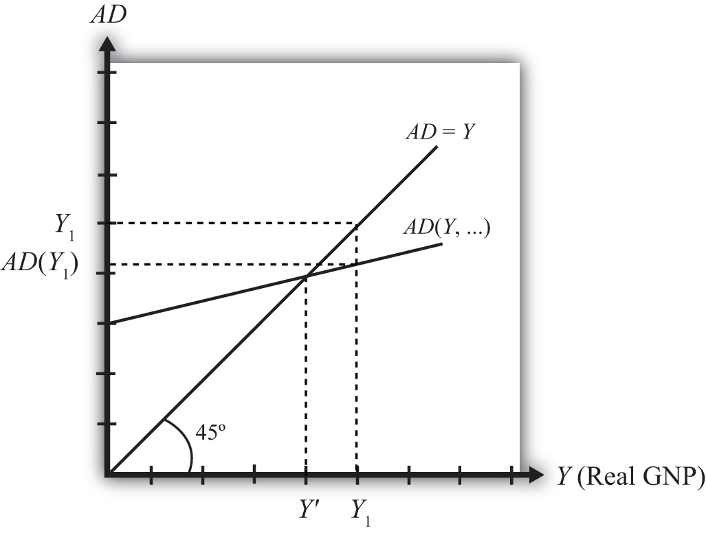
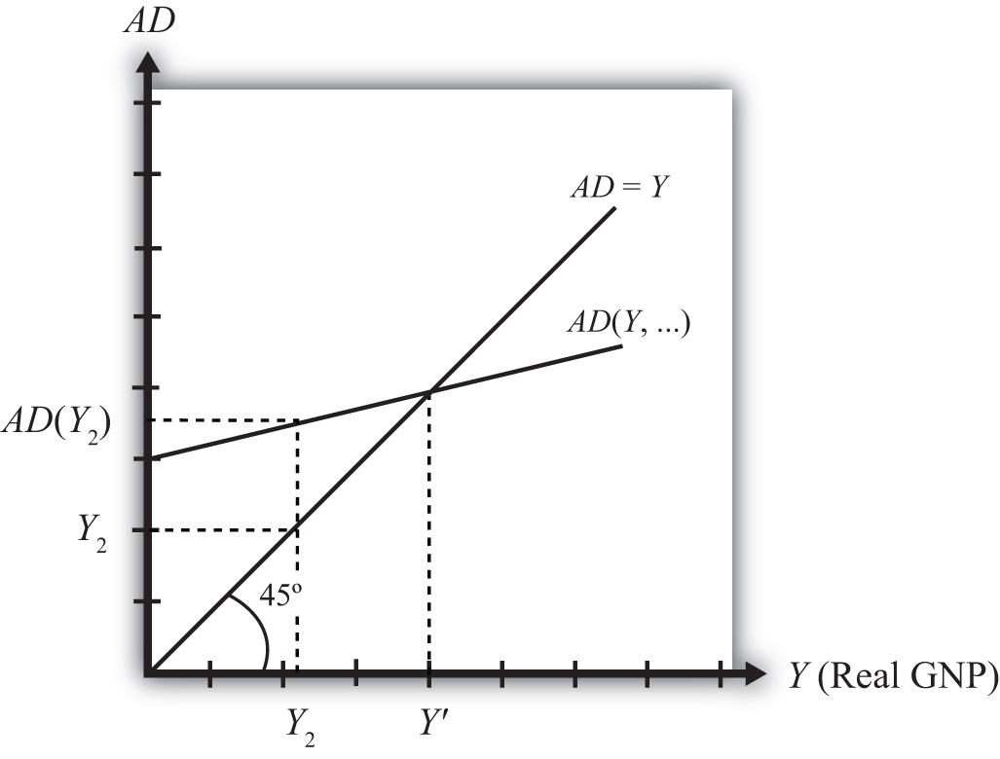

Any equilibrium in economics has an associated behavioral story to explain the forces that will move the endogenous variable to the equilibrium value. In the G&S market model, the endogenous variable is Y, real GNP. This is the variable that will change to achieve the equilibrium. Variables that do not change in the adjustment to the equilibrium are the exogenous variables. In this model, the exogenous variables are I0, G0, T, TR, E$/£, P$, and P£. (If one uses a linear consumption demand function, the C0 and mpc are also exogenous.) Changes in the exogenous variables are necessary to cause an adjustment to a new equilibrium. However, in telling an equilibrium story, it is typical to simply assume that the endogenous variable is not at the equilibrium (for some unstated reason) and then to explain how and why the variable will adjust to the equilibrium value.
Suppose for some reason actual GNP, Y1, is higher than the equilibrium GNP, Y′, as shown in Figure 19.2 "G&S Market Adjustment to Equilibrium: GNP Too High". In this case, aggregate demand is read from the AD function as AD(Y1) along the vertical axis. We project aggregate supply, Y1, to the vertical axis using the forty-five-degree line so that we can compare supply with demand. This helps us to see that Y1 > AD(Y1)—that is, aggregate supply is greater than aggregate demand.
Figure 19.2 G&S Market Adjustment to Equilibrium: GNP Too High
We now tell what can be called the “Inventory Story.” When total demand is less than supply, goods will begin to pile up on the shelves in stores. That’s because at current prices (and all other fixed exogenous parameters), households, businesses, and government would prefer to buy less than what is available for sale. Thus inventories begin to rise. Merchants, faced with storerooms filling up, send orders for fewer goods to producers. Producers respond to fewer orders by producing less, and thus GNP begins to fall.
As GNP falls, disposable income also falls, which causes a drop in aggregate demand as well. In the diagram, this is seen as a movement along the AD curve from Y1 to Y′. However, GNP falls at a faster rate, along the AD = Y line in the diagram. Eventually, the drop in aggregate supply catches up to the drop in demand when the equilibrium is reached at Y′. At this point, aggregate demand equals aggregate supply and there is no longer an accumulation of inventories.
It is important to recognize a common perception or intuition that does not hold in the equilibrium adjustment process. Many students imagine a case of rising inventories and ask, “Won’t producers just lower their prices to get rid of the excess?” In real-world situations this will frequently happen; however, that response violates the ceteris paribus assumption of this model. We assume here that the U.S. price level (P$) and consequently all prices in the economy remain fixed in the adjustment to the new equilibrium. Later, with more elaborate versions of the model, some price flexibility is considered.
Suppose for some reason, actual GNP, Y2, is lower than the equilibrium GNP, Y′, as shown in Figure 19.3 "G&S Market Adjustment to Equilibrium: GNP Too Low". In this case, aggregate demand is read from the AD function as AD(Y2) along the vertical axis. We project aggregate supply (Y2) to the vertical axis using the forty-five-degree line. This shows that AD(Y2) > Y2—that is, aggregate demand is greater than aggregate supply.
Figure 19.3 G&S Market Adjustment to Equilibrium: GNP Too Low
When total demand exceeds supply, inventories of goods that had previously been accumulated will begin to deplete in stores. That’s because, at current prices (and all other fixed exogenous parameters), households, businesses, and government would prefer to buy more than is needed to keep stocks at a constant level. Merchants, faced with depleted inventories and the possibility of running out of goods to sell, send orders to producers for greater quantities of goods. Producers respond to more orders by producing more and thus GNP begins to rise.
As GNP rises, disposable income also rises, which causes an increase in aggregate demand as well. In the diagram, this is seen as a movement along the AD curve from Y2 to Y′. However, GNP rises at a faster rate, along the AD = Y line in the diagram. Eventually, the increase in aggregate supply catches up to the increase in demand when the equilibrium is reached at Y′. At this point, aggregate demand equals aggregate supply and there is no further depletion of inventories.
Jeopardy Questions. As in the popular television game show, you are given an answer to a question and you must respond with the question. For example, if the answer is “a tax on imports,” then the correct question is “What is a tariff?”